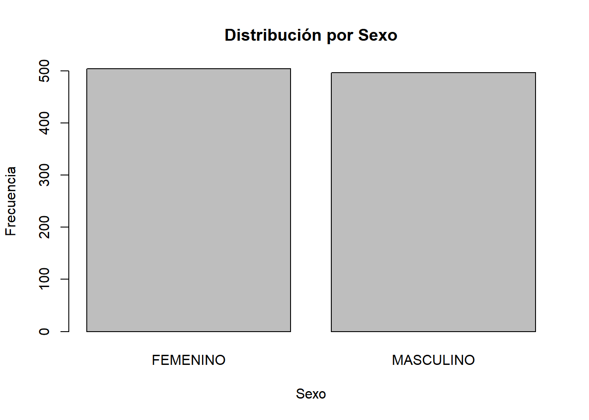
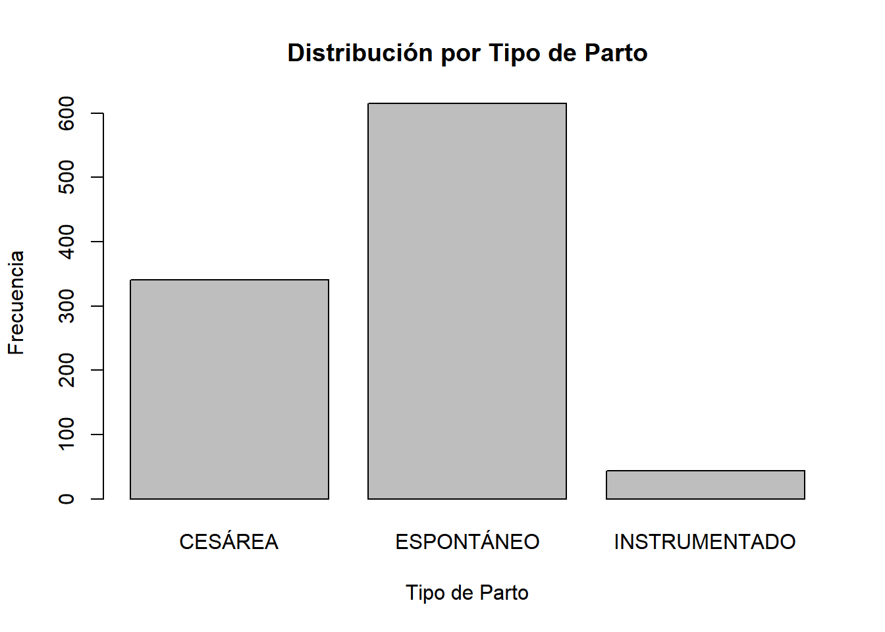
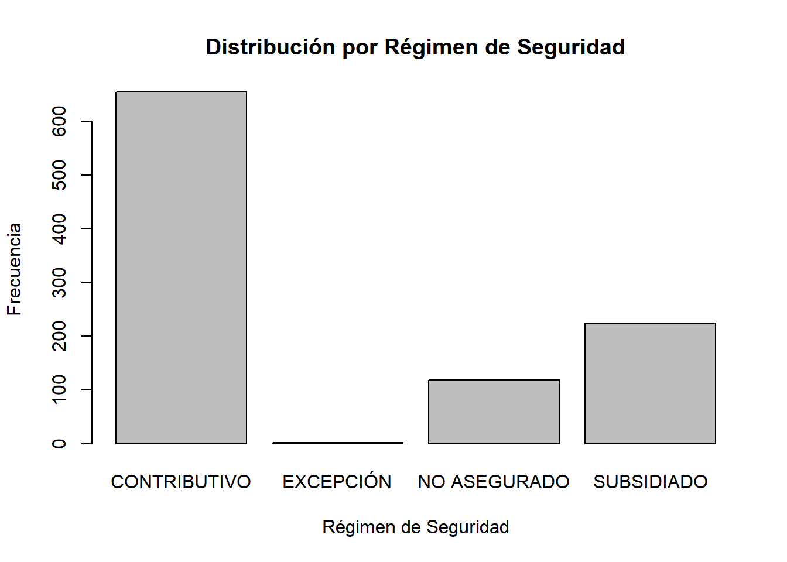
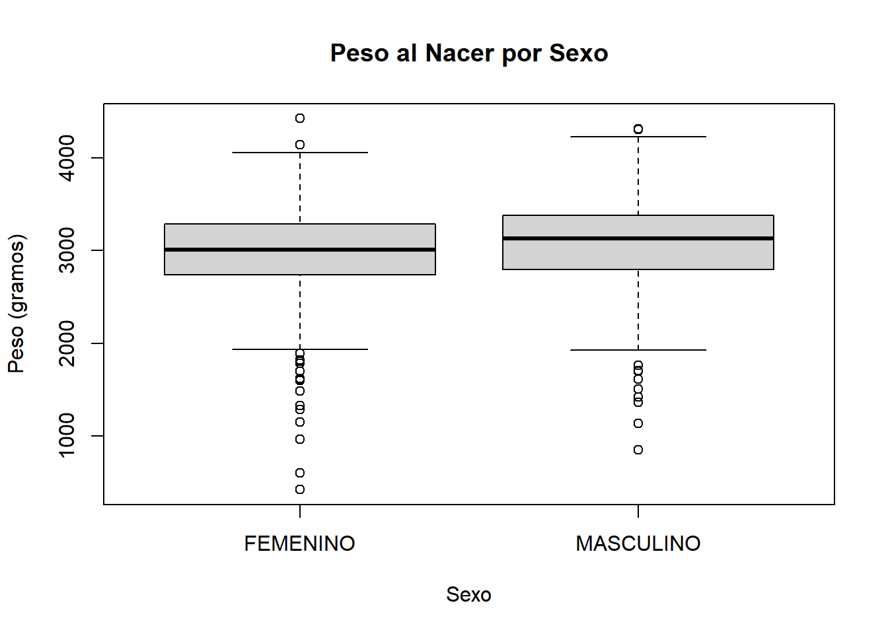
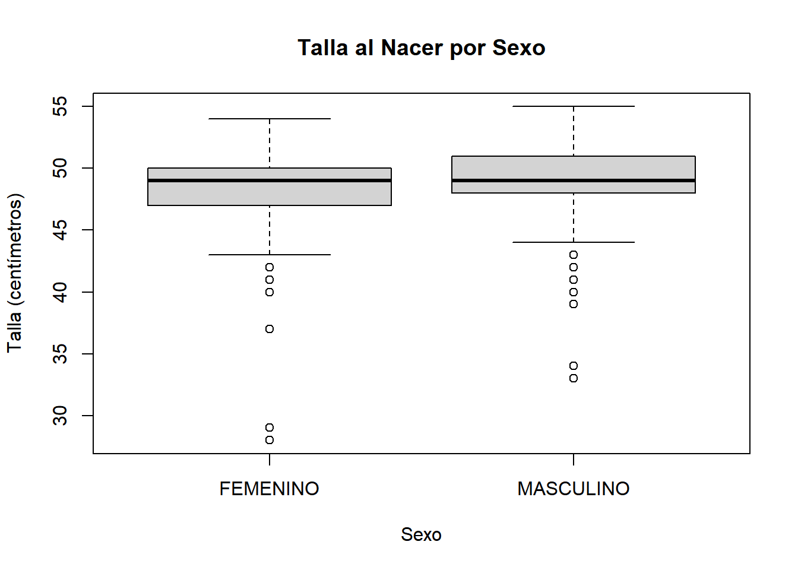

Capitulo 2 Analisis de la BD
Para llevar a cabo este análisis, comenzaremos importando la información del conjunto de datos de “Nacidos Vivos en el Hospital Manuel Uribe Ángel” en Colombia. Una vez importados los datos, procederemos a realizar un breve análisis descriptivo inicial para comprender la estructura y la distribución de la información recopilada. La utilidad fundamental de este conjunto de datos radica en su componente temporal, ya que contiene series de tiempo que nos permiten examinar la evolución y el comportamiento de los nacimientos en el transcurso del tiempo. Esta característica temporal nos proporciona una perspectiva invaluable para identificar tendencias a lo largo de períodos específicos, evaluar la estacionalidad de los nacimientos y analizar cualquier otro patrón temporal relevante que pueda surgir. Por lo tanto, este conjunto de datos posee un potencial significativo para generar insights que contribuyan a mejorar la comprensión y la gestión de la salud materna en el Hospital Manuel Uribe Ángel y más ampliamente en Colombia.
# Instalar y cargar la librería necesaria
#install.packages("readr")
#install.packages("knitr")
library(readr)
library(knitr)
# Definir la URL del conjunto de datos
url <- "https://www.datos.gov.co/resource/udqu-ifxr.csv"
# Leer el conjunto de datos desde la URL usando read_csv
data <- read_csv(url)
# Verificar la estructura del conjunto de datos
str(data)## spc_tbl_ [1,000 × 31] (S3: spec_tbl_df/tbl_df/tbl/data.frame)
## $ departamento : chr [1:1000] "ANTIOQUIA" "ANTIOQUIA" "ANTIOQUIA" "ANTIOQUIA" ...
## $ municipio : chr [1:1000] "ENVIGADO" "ENVIGADO" "ENVIGADO" "ENVIGADO" ...
## $ area_nacimiento : chr [1:1000] "CABECERA MUNICIPAL" "CABECERA MUNICIPAL" "CABECERA MUNICIPAL" "CABECERA MUNICIPAL" ...
## $ sexo : chr [1:1000] "MASCULINO" "FEMENINO" "MASCULINO" "FEMENINO" ...
## $ peso_gramos : num [1:1000] 2085 3000 2905 3700 3130 ...
## $ talla_cent_metros : num [1:1000] 45 47 50 50 49 54 50 50 39 50 ...
## $ fecha_nacimiento : POSIXct[1:1000], format: "2022-05-06 00:00:00" "2022-05-06 00:00:00" ...
## $ tiempo_de_gestaci_n : num [1:1000] 37 37 39 40 39 40 39 38 29 38 ...
## $ n_mero_consultas_prenatales : num [1:1000] 8 5 8 6 12 7 8 9 5 10 ...
## $ tipo_parto : chr [1:1000] "ESPONTÁNEO" "ESPONTÁNEO" "ESPONTÁNEO" "ESPONTÁNEO" ...
## $ multiplicidad_embarazo : chr [1:1000] "SIMPLE" "SIMPLE" "SIMPLE" "SIMPLE" ...
## $ pertenencia_tnica : chr [1:1000] "NINGUNO DE LOS ANTERIORES" "NINGUNO DE LOS ANTERIORES" "NINGUNO DE LOS ANTERIORES" "NINGUNO DE LOS ANTERIORES" ...
## $ grupo_indigena : chr [1:1000] NA NA NA NA ...
## $ edad_madre : num [1:1000] 28 33 25 39 32 23 30 17 25 25 ...
## $ r_gimen_seguridad : chr [1:1000] "CONTRIBUTIVO" "CONTRIBUTIVO" "SUBSIDIADO" "CONTRIBUTIVO" ...
## $ nombre_administradora : chr [1:1000] "EPS SURA" "EPS SURA" "NUEVA EPS S.A." "EPS SURA" ...
## $ edad_padre : num [1:1000] 24 29 21 32 37 28 25 27 30 25 ...
## $ nivel_educativo_padre : chr [1:1000] "MEDIA ACADÉMICA O CLÁSICA" "MEDIA ACADÉMICA O CLÁSICA" "MEDIA ACADÉMICA O CLÁSICA" "TECNOLÓGICA" ...
## $ departamento_expedici_n : chr [1:1000] "ANTIOQUIA" "ANTIOQUIA" "ANTIOQUIA" "ANTIOQUIA" ...
## $ municipio_expedici_n : chr [1:1000] "ENVIGADO" "ENVIGADO" "ENVIGADO" "ENVIGADO" ...
## $ estado_conyugal_de_la_madre : chr [1:1000] "NO ESTÁ CASADA Y LLEVA DOS AÑOS O MÁS VIVIENDO CON SU PAREJA" "NO ESTÁ CASADA Y LLEVA MENOS DE DOS AÑOS VIVIENDO CON SU PAREJA" "NO ESTÁ CASADA Y LLEVA MENOS DE DOS AÑOS VIVIENDO CON SU PAREJA" "NO ESTÁ CASADA Y LLEVA DOS AÑOS O MÁS VIVIENDO CON SU PAREJA" ...
## $ nivel_educativo_de_la_madre : chr [1:1000] "BÁSICA SECUNDARIA" "PROFESIONAL" "MEDIA ACADÉMICA O CLÁSICA" "TÉCNICA PROFESIONAL" ...
## $ numero_de_hijos_nacidos_vivos: num [1:1000] 4 2 1 1 2 1 1 1 1 2 ...
## $ numero_de_embarazos : num [1:1000] 5 2 1 1 2 1 1 1 1 2 ...
## $ area_de_residencia : chr [1:1000] "CABECERA MUNICIPAL" "CABECERA MUNICIPAL" "CABECERA MUNICIPAL" "CABECERA MUNICIPAL" ...
## $ pa_s_de_residencia : chr [1:1000] "COLOMBIA" "COLOMBIA" "COLOMBIA" "COLOMBIA" ...
## $ departamento_residencia : chr [1:1000] "ANTIOQUIA" "ANTIOQUIA" "ANTIOQUIA" "ANTIOQUIA" ...
## $ municipio_residencia : chr [1:1000] "ITAGÜÍ" "ENVIGADO" "LA ESTRELLA" "ENVIGADO" ...
## $ longitud : chr [1:1000] "-75.6143587142" "-75.5830101409" "-75.6451903823" "-75.5830101409" ...
## $ latitud : chr [1:1000] "6.16959762893" "6.16700455162" "6.15841974028" "6.16700455162" ...
## $ geocoded_column : chr [1:1000] "POINT (-75.6143587142 6.16959762893)" "POINT (-75.5830101409 6.16700455162)" "POINT (-75.6451903823 6.15841974028)" "POINT (-75.5830101409 6.16700455162)" ...
## - attr(*, "spec")=
## .. cols(
## .. departamento = col_character(),
## .. municipio = col_character(),
## .. area_nacimiento = col_character(),
## .. sexo = col_character(),
## .. peso_gramos = col_double(),
## .. talla_cent_metros = col_double(),
## .. fecha_nacimiento = col_datetime(format = ""),
## .. tiempo_de_gestaci_n = col_double(),
## .. n_mero_consultas_prenatales = col_double(),
## .. tipo_parto = col_character(),
## .. multiplicidad_embarazo = col_character(),
## .. pertenencia_tnica = col_character(),
## .. grupo_indigena = col_character(),
## .. edad_madre = col_double(),
## .. r_gimen_seguridad = col_character(),
## .. nombre_administradora = col_character(),
## .. edad_padre = col_double(),
## .. nivel_educativo_padre = col_character(),
## .. departamento_expedici_n = col_character(),
## .. municipio_expedici_n = col_character(),
## .. estado_conyugal_de_la_madre = col_character(),
## .. nivel_educativo_de_la_madre = col_character(),
## .. numero_de_hijos_nacidos_vivos = col_double(),
## .. numero_de_embarazos = col_double(),
## .. area_de_residencia = col_character(),
## .. pa_s_de_residencia = col_character(),
## .. departamento_residencia = col_character(),
## .. municipio_residencia = col_character(),
## .. longitud = col_character(),
## .. latitud = col_character(),
## .. geocoded_column = col_character()
## .. )
## - attr(*, "problems")=<externalptr># Visualizar las primeras filas del conjunto de datos
kable(head(data))| departamento | municipio | area_nacimiento | sexo | peso_gramos | talla_cent_metros | fecha_nacimiento | tiempo_de_gestaci_n | n_mero_consultas_prenatales | tipo_parto | multiplicidad_embarazo | pertenencia_tnica | grupo_indigena | edad_madre | r_gimen_seguridad | nombre_administradora | edad_padre | nivel_educativo_padre | departamento_expedici_n | municipio_expedici_n | estado_conyugal_de_la_madre | nivel_educativo_de_la_madre | numero_de_hijos_nacidos_vivos | numero_de_embarazos | area_de_residencia | pa_s_de_residencia | departamento_residencia | municipio_residencia | longitud | latitud | geocoded_column |
|---|---|---|---|---|---|---|---|---|---|---|---|---|---|---|---|---|---|---|---|---|---|---|---|---|---|---|---|---|---|---|
| ANTIOQUIA | ENVIGADO | CABECERA MUNICIPAL | MASCULINO | 2085 | 45 | 2022-05-06 | 37 | 8 | ESPONTÁNEO | SIMPLE | NINGUNO DE LOS ANTERIORES | NA | 28 | CONTRIBUTIVO | EPS SURA | 24 | MEDIA ACADÉMICA O CLÁSICA | ANTIOQUIA | ENVIGADO | NO ESTÁ CASADA Y LLEVA DOS AÑOS O MÁS VIVIENDO CON SU PAREJA | BÁSICA SECUNDARIA | 4 | 5 | CABECERA MUNICIPAL | COLOMBIA | ANTIOQUIA | ITAGÜÍ | -75.6143587142 | 6.16959762893 | POINT (-75.6143587142 6.16959762893) |
| ANTIOQUIA | ENVIGADO | CABECERA MUNICIPAL | FEMENINO | 3000 | 47 | 2022-05-06 | 37 | 5 | ESPONTÁNEO | SIMPLE | NINGUNO DE LOS ANTERIORES | NA | 33 | CONTRIBUTIVO | EPS SURA | 29 | MEDIA ACADÉMICA O CLÁSICA | ANTIOQUIA | ENVIGADO | NO ESTÁ CASADA Y LLEVA MENOS DE DOS AÑOS VIVIENDO CON SU PAREJA | PROFESIONAL | 2 | 2 | CABECERA MUNICIPAL | COLOMBIA | ANTIOQUIA | ENVIGADO | -75.5830101409 | 6.16700455162 | POINT (-75.5830101409 6.16700455162) |
| ANTIOQUIA | ENVIGADO | CABECERA MUNICIPAL | MASCULINO | 2905 | 50 | 2022-05-07 | 39 | 8 | ESPONTÁNEO | SIMPLE | NINGUNO DE LOS ANTERIORES | NA | 25 | SUBSIDIADO | NUEVA EPS S.A. | 21 | MEDIA ACADÉMICA O CLÁSICA | ANTIOQUIA | ENVIGADO | NO ESTÁ CASADA Y LLEVA MENOS DE DOS AÑOS VIVIENDO CON SU PAREJA | MEDIA ACADÉMICA O CLÁSICA | 1 | 1 | CABECERA MUNICIPAL | COLOMBIA | ANTIOQUIA | LA ESTRELLA | -75.6451903823 | 6.15841974028 | POINT (-75.6451903823 6.15841974028) |
| ANTIOQUIA | ENVIGADO | CABECERA MUNICIPAL | FEMENINO | 3700 | 50 | 2022-05-07 | 40 | 6 | ESPONTÁNEO | SIMPLE | NINGUNO DE LOS ANTERIORES | NA | 39 | CONTRIBUTIVO | EPS SURA | 32 | TECNOLÓGICA | ANTIOQUIA | ENVIGADO | NO ESTÁ CASADA Y LLEVA DOS AÑOS O MÁS VIVIENDO CON SU PAREJA | TÉCNICA PROFESIONAL | 1 | 1 | CABECERA MUNICIPAL | COLOMBIA | ANTIOQUIA | ENVIGADO | -75.5830101409 | 6.16700455162 | POINT (-75.5830101409 6.16700455162) |
| ANTIOQUIA | ENVIGADO | CABECERA MUNICIPAL | FEMENINO | 3130 | 49 | 2022-05-07 | 39 | 12 | ESPONTÁNEO | SIMPLE | NINGUNO DE LOS ANTERIORES | NA | 32 | SUBSIDIADO | SAVIA SALUD E.P.S. | 37 | SIN INFORMACIÓN | ANTIOQUIA | ENVIGADO | ESTÁ CASADA | MEDIA ACADÉMICA O CLÁSICA | 2 | 2 | CABECERA MUNICIPAL | COLOMBIA | ANTIOQUIA | ITAGÜÍ | -75.6143587142 | 6.16959762893 | POINT (-75.6143587142 6.16959762893) |
| ANTIOQUIA | ENVIGADO | CABECERA MUNICIPAL | MASCULINO | 3830 | 54 | 2021-10-01 | 40 | 7 | INSTRUMENTADO | SIMPLE | NINGUNO DE LOS ANTERIORES | NA | 23 | SUBSIDIADO | SAVIA SALUD E.P.S. | 28 | MEDIA ACADÉMICA O CLÁSICA | ANTIOQUIA | ENVIGADO | NO ESTÁ CASADA Y LLEVA DOS AÑOS O MÁS VIVIENDO CON SU PAREJA | TÉCNICA PROFESIONAL | 1 | 1 | CABECERA MUNICIPAL | COLOMBIA | ANTIOQUIA | SABANETA | -75.6155852932 | 6.15097018093 | POINT (-75.6155852932 6.15097018093) |
A continuación ofrecemos una breve vista al analisis descriptivo previo de la información
## peso_gramos talla_cent_metros tiempo_de_gestaci_n edad_madre
## Min. : 420 Min. :28.00 Min. :25.00 Min. :13.00
## 1st Qu.:2754 1st Qu.:48.00 1st Qu.:37.00 1st Qu.:23.00
## Median :3068 Median :49.00 Median :39.00 Median :26.50
## Mean :3023 Mean :48.83 Mean :38.17 Mean :27.04
## 3rd Qu.:3336 3rd Qu.:50.00 3rd Qu.:39.00 3rd Qu.:32.00
## Max. :4425 Max. :55.00 Max. :41.00 Max. :46.00## sexo
## FEMENINO MASCULINO
## 504 496## tipo_parto
## CESÁREA ESPONTÁNEO INSTRUMENTADO
## 341 615 44## r_gimen_seguridad
## CONTRIBUTIVO EXCEPCIÓN NO ASEGURADO SUBSIDIADO
## 655 2 119 224
Después de realizar un análisis descriptivo de algunas variables clave en el conjunto de datos, podemos llegar a varias conclusiones importantes:
Peso al nacer: El peso promedio al nacer es de aproximadamente 3023 gramos, con un rango que va desde 420 gramos hasta 4425 gramos. La mayoría de los bebés tienen un peso al nacer que oscila entre 2754 gramos y 3336 gramos, como lo indica el primer y tercer cuartil respectivamente.
Talla al nacer: La talla promedio al nacer es de alrededor de 48.83 centímetros, con un rango que va desde 28 centímetros hasta 55 centímetros. La mayoría de los bebés tienen una talla al nacer que oscila entre 48 y 50 centímetros, como lo indica el primer y tercer cuartil respectivamente.
Tiempo de gestación: El tiempo promedio de gestación es de aproximadamente 38.17 semanas, con un rango que va desde 25 semanas hasta 41 semanas. La mayoría de las gestaciones tienen una duración que oscila entre 37 y 39 semanas, como lo indica el primer y tercer cuartil respectivamente.
Edad de la madre: La edad promedio de la madre es de alrededor de 27.04 años, con un rango que va desde 13 años hasta 46 años. La mayoría de las madres tienen una edad que oscila entre 23 años y 32 años, como lo indica el primer y tercer cuartil respectivamente.